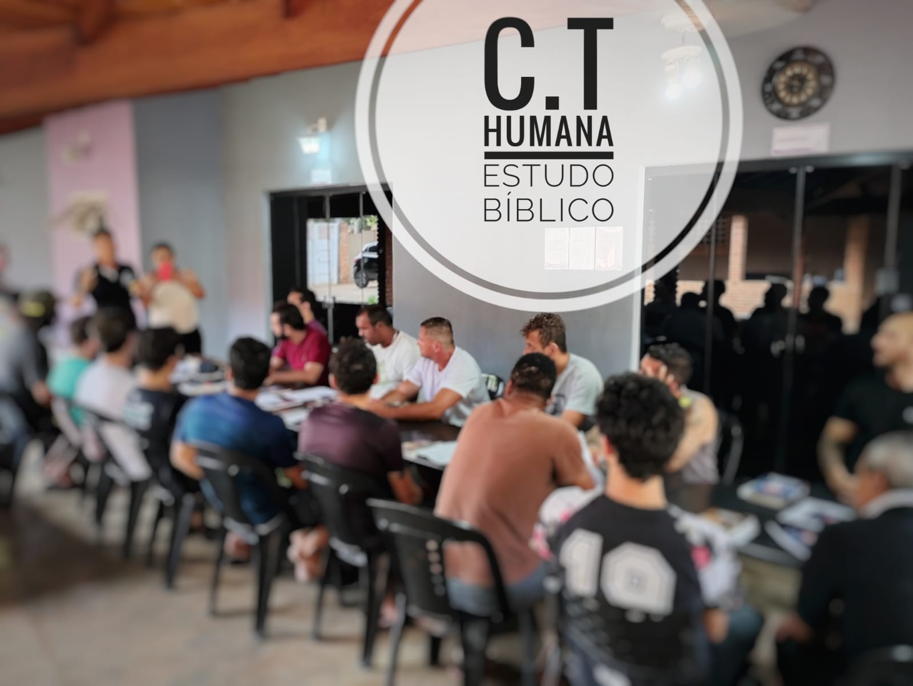

Como Identificar Sinais de Dependência Química
Aprenda a reconhecer os primeiros sinais de dependência e quando buscar ajuda profissional.
Leia maisAtendimento via WhatsApp:
(14) 99753-0231Oferecemos serviços de fisioterapia, psicologia, nutrição, acompanhamento médico e enfermagem, promovendo reabilitação completa com cuidado humanizado e especializado.
A dependência química é uma doença complexa que exige tratamento especializado e apoio emocional contínuo para a recuperação.
Saiba MaisO alcoolismo é uma doença que impacta a vida do indivíduo, exigindo tratamento adequado, apoio emocional e reabilitação contínua.
Saiba MaisA saúde mental é essencial para o bem-estar geral, e o cuidado adequado promove equilíbrio emocional, estabilidade e qualidade de vida.
Saiba MaisSomos um grupo de clínicas de reabilitação dedicado ao cuidado integral, unindo profissionais especializados e tecnologia avançada. Nosso compromisso é oferecer tratamentos personalizados, promovendo saúde, bem-estar e uma nova chance de vida aos nossos pacientes, sempre com empatia e excelência.

Saiba maisNossa equipe é formada por profissionais dedicados e experientes, comprometidos em oferecer cuidado humanizado e soluções personalizadas, ajudando cada paciente a superar desafios e alcançar uma vida plena.
Nossos enfermeiros dedicam-se ao cuidado integral, garantindo suporte constante, acolhimento e atenção para promover conforto e recuperação eficaz aos pacientes.
Nossos psicólogos atuam com empatia e profissionalismo, oferecendo suporte emocional essencial para fortalecer a saúde mental e o bem-estar dos pacientes.
Nossos nutricionistas oferecem orientação personalizada, promovendo uma alimentação equilibrada que potencializa a reabilitação e contribui para uma vida mais saudável.
Nossos médicos são especializados, empáticos e comprometidos em proporcionar atendimento de excelência, focado na recuperação.
Nossas unidades estão estrategicamente localizadas para oferecer acesso fácil e conforto, contando com infraestrutura moderna e ambiente acolhedor.
Explore nossos materiais informativos sobre dependência química, saúde mental e reabilitação.
Informações essenciais sobre sinais, sintomas e tratamento da dependência química.
Ler maisEstratégias práticas para manter o equilíbrio emocional e prevenir recaídas.
Ler maisRecursos para famílias afetadas pela dependência, incluindo grupos de apoio.
Ler mais"A clínica me ajudou a recuperar minha vida. O tratamento foi excepcional e a equipe muito dedicada."
- João Silva"Graças ao Grupo Vida Sóbria, consegui superar minhas dependências. Recomendo a todos."
- Maria Oliveira"Ambiente acolhedor e profissionais competentes. Minha recuperação foi completa."
- Carlos SantosFique por dentro das últimas novidades e dicas sobre dependência química e reabilitação.
Aprenda a reconhecer os primeiros sinais de dependência e quando buscar ajuda profissional.
Leia maisDescubra como o apoio mútuo pode acelerar o processo de recuperação.
Leia maisDicas práticas para manter a sobriedade e prevenir recaídas no dia a dia.
Leia maisA dependência química é uma doença crônica que afeta o cérebro e o comportamento, levando a uma perda de controle sobre o uso de substâncias.
Se você ou alguém próximo apresenta sinais como perda de controle, tolerância crescente ou sintomas de abstinência, é hora de buscar ajuda profissional.
Oferecemos tratamentos ambulatoriais, internamento e programas de reabilitação personalizados, incluindo terapia individual e em grupo.
Sim, garantimos total confidencialidade e respeito à privacidade de todos os pacientes, em conformidade com as leis de proteção de dados.